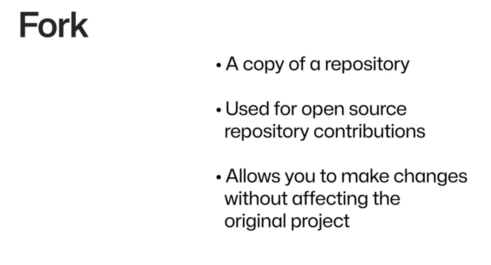
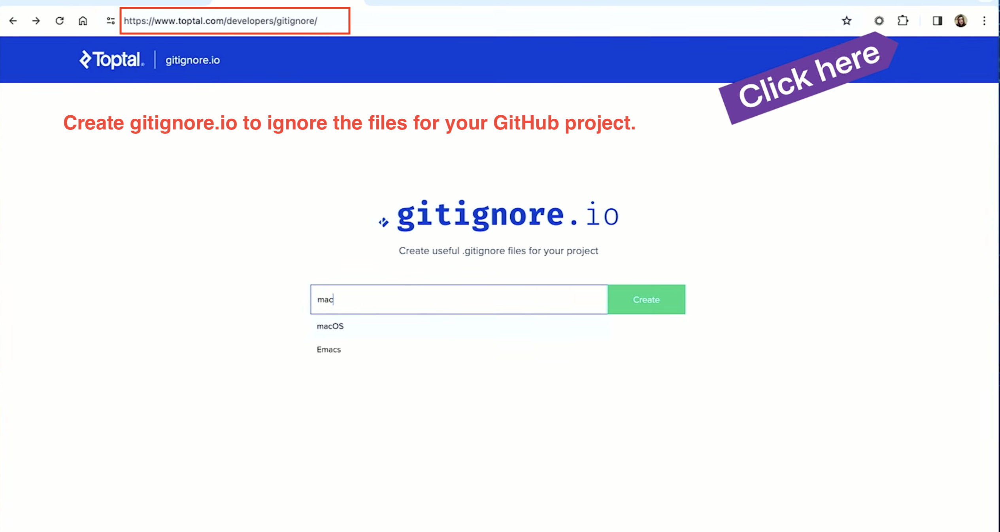

1. The GitHub Flow
The standard loop: clone a repo, branch, commit locally, push, open a pull request, then merge.
- git clone
- git checkout -b newbranch
- git add .
- git commit -m "message"
- git push
- open a PR
- merge PR & delete branch

2. How to move an existing local project to GitHub
Assume you already have a project folder on your computer and want to publish it on GitHub. Follow these steps in order.
-
1. Create a new repository on GitHub
- Click New repository
- Give it a name
- Choose Public or Private
- Do not initialize it with a README if your local project already exists

Create a new repositoryStart with an empty remote repo when you already have local code. 
Repository settingsLeave README unchecked so you do not conflict with your existing local files. -
2. Open a terminal in your local project folder
Open Mac terminal and go to your project folder.
-
3. Initialize Git (if you haven’t already)
git init git status git add .
git initturns your folder into a Git repo.git statusshows untracked files.git add .stages everything for the next commit.
Initialize and stageRun git init, check what’s new withgit status, then stage all files withgit add .. -
4. Add files
git add .

Stage all files git add .prepares every file in the folder for the next commit. -
5. Commit files
git commit -m "Initial commit"

Save your first snapshotAfter committing, git showcan confirm what was recorded. -
6. Connect your local project to GitHub
git remote add origin https://github.com/YOUR_USERNAME/REPO_NAME.git
Replace
YOUR_USERNAMEandREPO_NAMEwith your GitHub username and the repository you created in step 1.
GitHub’s push instructionsAfter creating an empty repo, GitHub shows the remote URL and commands to run locally. 
Add the remote git remote add originlinks your local repo to GitHub. -
7. Push code
git branch -M main git push -u origin main

From local to GitHubCommits on your machine are uploaded to the remote when you push. 
Push to GitHub git push -u origin mainpublishes your branch and sets upstream tracking.
Authentication
If GitHub asks you to sign in when pushing:
- Use your GitHub username
- Use a Personal Access Token instead of your password
GitHub’s guide for tokens: Managing your personal access tokens


3. Repositories & clone
Create a repo on GitHub, authenticate, and get a copy on your machine—via CLI or GitHub Desktop.
-
Create a new repositoryStart a project on GitHub with a name, description, and visibility. -
Remote repository optionsChoose defaults like README, .gitignore, and license when creating the repo. -
AuthenticationGenerate a personal access token so Git can push to GitHub securely. -

Clone with Git git clone <url>downloads the full repository to your computer. -

Clone then branchAfter cloning, cdinto the project and create a branch withgit checkout -b <name>. -

Clone with GitHub DesktopSame result as git clone, using a graphical interface.
4. Sync with remote
Keep your local branch up to date with changes others have pushed.
-

Pull latest changes git pullfetches and merges remote updates into your current branch.
5. Branches
Work on isolated lines of development and clean up when you are done.
-

Branch after a forkCreate a branch on your fork before making changes you will contribute back. -

Delete branchesRemove branches locally and on GitHub after a pull request is merged.
6. Fork & open source
Contribute to projects you do not own by forking, branching, and opening pull requests.
-

Fork a repositoryA fork is your copy of someone else's repo under your GitHub account. -

Contribute to open sourceFind an issue, fork, branch, commit, push, and open a pull request. -

Choosing a projectLook for active maintenance, clear docs, and beginner-friendly issues.
7. Project setup
Files and conventions that keep repositories clean and easy for others to use.
-

Generate a .gitignoreUse gitignore.io to build a ignore file for your OS, editor, and language. -

.gitignore exampleExclude build artifacts, dependencies, and secrets from version control. -

Markdown for READMEsFormat project docs with headings, lists, links, and code blocks. -

Choose a licensechoosealicense.com helps you pick how others may use your code.